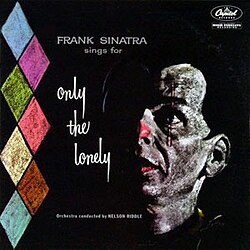

Frank Sinatra Sings for Only the Lonely (1958)
Lançado em setembro de 1958
Esse é um dos álbuns mais emocionais e sombrios de Sinatra. Ele canta sobre tristeza, solidão e desilusões amorosas.
Musicas
- “Only the Lonely”
- "Angel Eyes”
- " What’s New?”
- "Willow Weep for Me”
- "Gone with the Wind”
- “One for My Baby”
- “Blues in the Night”
- “Spring Is Here”